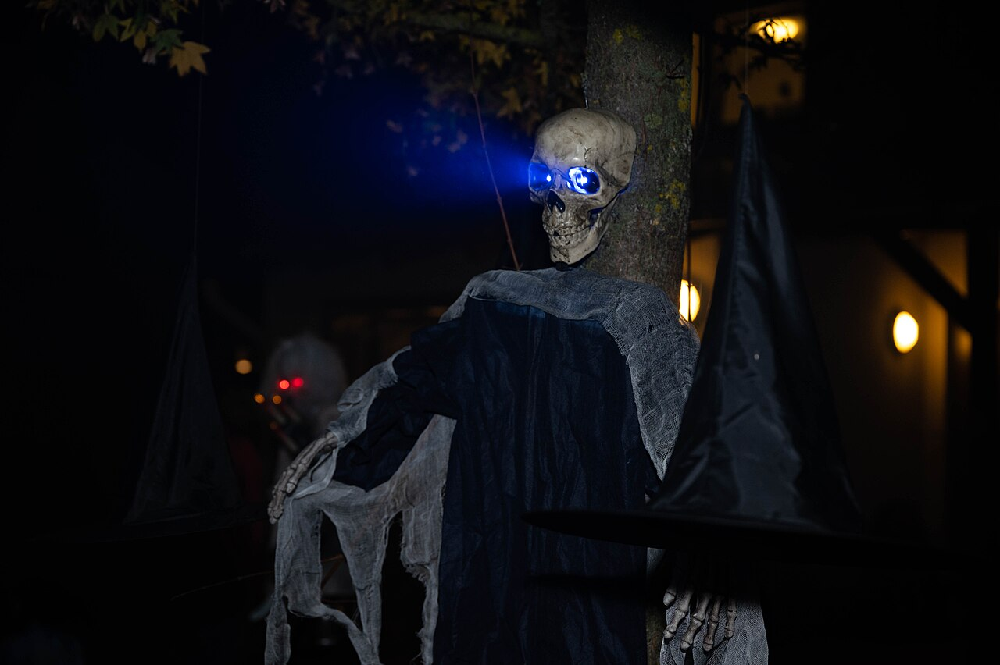

In-class activity: pick one of the haunted-house prep tasks and build it. The scares need machinery, and the task sheet points at a real problem with drops: a motor can wind something up, but letting it back down at motor speed is slow, and slow isn't scary.
Pedro and I went after that problem with a clutch. One motor winds the skeleton up through a pulley. To drop it, a second motor turns a rack gear that pulls the winding motor backwards, out of engagement, and with nothing holding the pulley the skeleton comes down in free fall. After the drop the motor re-engages and winds the skeleton back up, so the next scare is already arming itself.
The task sheet warns that string slips off the spool and winds up wrapped around the axle, and ours did slip. We boxed it in instead of trying to stop it: the string runs inside its own restricted space, so even when it slips it has nowhere to go and can't reach the axle.
The trigger is still an idea. The plan is a sensor the visitor walks across, connected through the hub's Bluetooth, so crossing it is what drops the skeleton. That part isn't built, and there's no code yet.
Still to add: the trigger and its code, and photos of the mechanism. Until then, the photo at the top is a stock image.